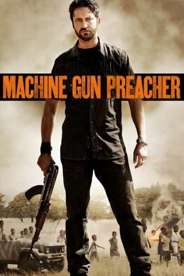
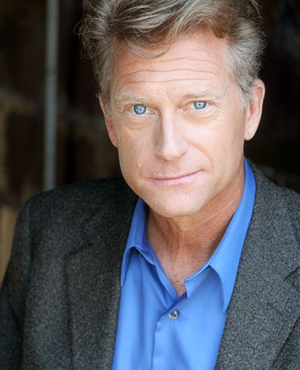

#1190 Machine Gun Preacher
 
 IMDB-Wertung: 6.8 / 10
IMDB-Wertung: 6.8 / 10  Metascore: 43
Metascore: 43 
Sam Childers wuchs in familiär schwierigen Verhältnissen auf. Als drogensüchtiger und dealender Harley-Davidson-Biker kommt er wegen seiner kriminellen Machenschaften in den Knast. Als er aus dem Gefängnis entlassen wird, scheint im ersten Moment alles beim Alten zu sein. Doch schon bald offenbart ihm seine Frau Lynn, dass sie während seiner Abwesenheit den Glauben zu Gott gefunden hat und deswegen ihren Job als Stripperin aufgeben will. Nach anfänglicher Skepsis lässt sich Sam überreden, auch einmal in eine Kirche zu gehen und einem Gottesdienst beizuwohnen. Dort findet auch der raue Biker schnell zum Glauben. Im frisch religiösen Rausch geht der ehemalige Gangster nach Afrika, um im Sudan als Entwicklungshelfer zu arbeiten. Als er dort an die völkermordendem Milizen gerät, kommt ihm seine kriminelle Vergangenheit ganz gelegen, um sich gegen die brutalen Militärs zur Wehr zu setzen.
Jahr: 2011
Dauer: 129 Minuten
FSK: 16
Land: USA Studio: Relativity MediaTonspuren: DTS - ,
Untertitel: Deutsch,
Auflösung: 1080p (1920x800) Größe: 8243 MB
Genre: Action, Biographie, Krimi, Drama
Regisseur:  Marc Forster
Marc Forster
Drehbuch: Jason Keller
Soundtrack: Asche & Spencer
Darsteller:
 Gerard Butler als Sam Childers
Gerard Butler als Sam Childers Michelle Monaghan als Lynn Childers
Michelle Monaghan als Lynn Childers Kathy Baker als Daisy
Kathy Baker als Daisy Michael Shannon als Donnie
Michael Shannon als Donnie Madeline Carroll als Paige #2
Madeline Carroll als Paige #2- Souleymane Sy Savane als Deng
-  Peter Carey als Bill Wallace
- Misty Mills als Biker Chick
- Nicole Michele Sobchack als Bartender
- Sidi Henderson als Shaved Head
- Judy Stepanian als Employment Woman
- Peter Tocco als Mechanic
- Steve Blackwood als Bank Manager
- Brett Wagner als Ben Hobbes / Biker
- Sean Patrick Leonard als Crackhead
- Mandalynn Carlson als Paige's Friend
 Richard Goteri als Pawn Shop Owner
Richard Goteri als Pawn Shop Owner- Paul Lang als Prison Clerk
 Fana Mokoena als John Garang
Fana Mokoena als John Garang- Wandile Molebatsi als LRA Commander
 Corey Large als American Businessman , uncredited
Corey Large als American Businessman , uncredited- Ray MacDonald als Parishioner , uncredited
- Joseph Smith als Construction Worker , uncredited
- Ryann Campos als Paige #1
- Grant R. Krause als Billy / Contractor
- Reavis Graham als Pastor Krause
- Barbara Coven als Shannon Wallace
- Mike Litaker als Drifter
- Inga R. Wilson als Mrs. Shields
- Bruce Bennett als Pastor Relling
- Ava Schroeder als Hobbes Daughter
- David Whitesell als Customs Officer
- Matthew J. Boucher als Mover
- Claudia Rodgers als Sue / Volunteer
- Scott Westerman als Biker
- Michele DeSelms als Newscaster
- Rhema Marvanne als Child Singer
- Janet L. Miller als Church Pianist
- Percy Matsemela als Nineteen
- Ronnie Nyakale als AJ
- Mduduzi Mabaso als Marco
- Junior Magale als William
- Jessica Joffe als Agnete Closson
- Abena Ayivor als Betty
- Warona Seane als Rose
- Sophie 'Mer' Ayang als Betty's Helper
- Ruley Madriagi als SPLA Soldier #1
- Chris Agwai als SPLA Solder #2
- Makhaola Ndebele als SPLA Soldier #3
- Jacob Ayuel als SPLA Dinka Soldier
Datei: X:\2011(G-M)\Machine Gun Preacher (2011, FSK16, 1920x800).mkv seit 02.06.2015
Festplatte: HD 2011(G-Z)
 Es gibt insgesamt 100 Filme in der Gruppe '2011(G-M)'
Es gibt insgesamt 100 Filme in der Gruppe '2011(G-M)'